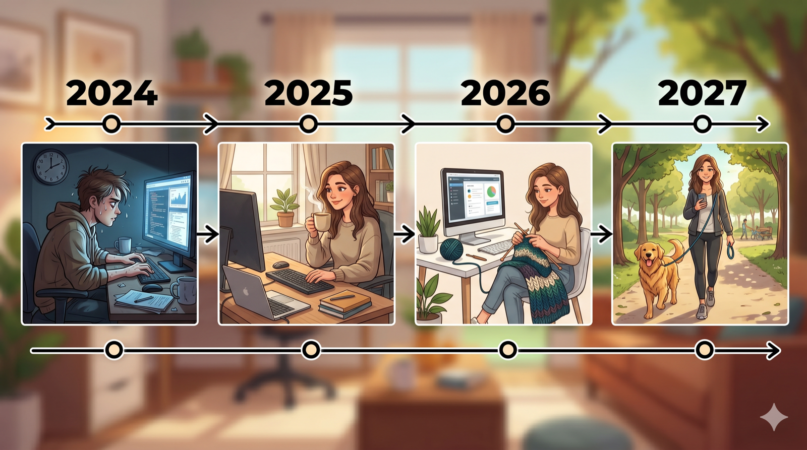

Foundations
Module 2/7 · 슬라이드 24개 · 원본 슬라이드 ↗
API 기초, 시스템 프롬프트, 프롬프트/컨텍스트 엔지니어링, 스트리밍, 에러 처리
이 모듈의 슬라이드 24개
- 1. Foundations
- 2. The Rise of the "Product Orchestrator"
- 3. Paste this into Claude Code
- 4. What Claude built
- 5. Run it as a developer
- 6. Ship it to production
- 7. Quiz
- 8. What the React app actually does
- 9. Introducing LLMs
- 10. What is an LLM?
- 11. What does it do?
- 12. Example: AI chat app vs. the underlying model
- 13. A first API call
- 14. First LLM app
- 15. What we're building
- 16. Install and run
- 17. backend/app.py
- 18. frontend/src/App.jsx
- 19. Find the deficiencies
- 20. Project Assignment
- 21. Fix three deficiencies with Claude Code
- 22. Streaming
- 23. Streaming from Backend to Frontend
- 24. Frontend — the browser reads the stream
1. Foundations #
Full Stack Application Development with Coding Agents (Claude Code)

2. The Rise of the "Product Orchestrator" #
The shift

Then
The engineering team
A team of specialists turning specs into code, sprint after sprint.

Then
The product manager
One person holding the why — writing specs, waiting on builds.


Now
The Product Orchestrator
One person who holds the why and directs coding agents to build it — embodies software architecture and product/market expertise
3. Paste this into Claude Code #
Scaffold
1 · Open the project in VSCode: code ~/ksept-lab (the folder from Setup)
2 · Open the integrated terminal: Terminal → New Terminal
3 · Start Claude in auto-accept mode: claude --permission-mode acceptEdits
4 · Paste the prompt below and submit it
Create a hello-world full-stack app in the current directory.
Do NOT install dependencies — just write the files and give me a
summary of what you created. I'll run the installs after I review.
backend/
- Single-file Flask app (app.py)
- One endpoint: GET /api/hello returning {"message": "Hello from Flask"}
- Enable CORS so the frontend can call it
- requirements.txt listing flask and flask-cors
- README.md: how to install (pip install -r requirements.txt, with
the .venv at the project root active) and how to run
(python app.py on port 5000)
frontend/
- React app scaffolded with Vite, plain JavaScript (not TypeScript)
- A single page App.jsx that fetches /api/hello on mount and
displays the message returned
- vite.config.js proxies /api/* to http://localhost:5000
- README.md: how to install (npm install) and how to run
(npm run dev on port 5173)
Top-level README.md explaining how to start both servers in two terminals.Auto-accept lets Claude write files without asking each time (not --dangerously-skip-permissions, which skips all checks). "Don't install dependencies yet" is deliberate — you want to read what Claude proposes before it modifies the project.
4. What Claude built #
Walkthrough
Claude probably built something close to this — yours may differ a little (file names, comments, exact layout), but the shape will be the same.
ksept-lab/
├── .venv/ Python virtual env (created earlier)
├── README.md how to start both servers
├── backend/
│ ├── app.py Flask app — one endpoint, CORS enabled
│ ├── requirements.txt flask, flask-cors
│ └── README.md
└── frontend/
├── index.html Vite host page
├── package.json JS deps (react, react-dom, vite)
├── vite.config.js dev server config + /api/* proxy → :5000
├── public/
└── src/
├── main.jsx React entry — mounts <App/>
├── App.jsx fetches /api/hello, renders the message
└── index.cssTwo halves talking to each other: Flask serves /api/hello on :5000; Vite serves the React app on :5173 and proxies /api/* calls back to Flask. The proxy is why the frontend can call the API without worrying about CORS or full URLs in dev.
5. Run it as a developer #
Walkthrough
Terminal 1 — backend
macOS
Windows
cd ~/ksept-lab
source .venv/bin/activate
cd backend
pip install -r requirements.txt
python app.py
# → Running on http://127.0.0.1:5000
cd ~/ksept-lab
.venv\Scripts\Activate.ps1
cd backend
pip install -r requirements.txt
python app.py
# → Running on http://127.0.0.1:5000Terminal 2 — frontend
cd ~/ksept-lab/frontend
npm install
npm run dev
# → Local: http://localhost:5173Open http://localhost:5173 — you should see "Hello from Flask" rendered by React. The React app fetched it through the Vite proxy from the Flask backend.
Frontend server
Vite + React
:5173
Serves the React app & proxies /api/*
GET /api/hello
"Hello from Flask"
Backend server
Flask
:5000
Exposes /api/hello → returns JSON
6. Ship it to production #
Walkthrough
No Vite dev server in production. You build React to static files, then one origin serves everything: Nginx hands back the static app and reverse-proxies /api/* to Gunicorn, which runs your Flask code — all baked into one container image.
Client
Browser
One origin, one port
HTTPS :443
Docker container
Web server
Nginx
TLS · gzip · serves dist/ (React build)
/api/* →
WSGI server
Gunicorn · 4 workers
runs app:app — your Flask code
# stage 1 — build React to static files
FROM node:20-slim AS web
WORKDIR /web
COPY frontend/ .
RUN npm ci && npm run build
# stage 2 — Flask + nginx in one image
FROM python:3.12-slim
RUN apt-get update && apt-get install -y nginx
WORKDIR /app
COPY backend/requirements.txt .
RUN pip install -r requirements.txt
COPY backend/ .
COPY --from=web /web/dist /usr/share/nginx/html
COPY deploy/nginx.conf /etc/nginx/conf.d/default.conf
EXPOSE 80
# gunicorn runs Flask; nginx fronts it
CMD gunicorn -w 4 -b 127.0.0.1:8000 app:app & \
nginx -g 'daemon off;'Nginx — the front door
A fast web server that terminates TLS, serves the static React dist/ files directly, and forwards only /api/* requests back to Gunicorn.
Gunicorn — the engine
A production WSGI server that runs your Flask code across several worker processes, so the app serves many requests at once — unlike Flask's single-threaded dev server.
7. Quiz #
What did Claude actually build?
8. What the React app actually does #
Quiz
Answers locked
keyword: stateless
Open
frontend/src/App.jsx. Where exactly does the network request happen — on mount, on every render, or on a button click? Which line tells you that?Answer
🔒 Enter the passcode to reveal this answer.
What does the page display in the brief moment between the page loading and the fetch completing? Where in the code is that controlled?
Answer
🔒 Enter the passcode to reveal this answer.
If the Flask process is stopped (Ctrl+C in terminal 1) but Vite keeps running, what shows up on the page when you reload? Where in
App.jsxis that case handled — or isn't it?Answer
🔒 Enter the passcode to reveal this answer.
You want to add a second endpoint
GET /api/timethat returns the server's current time, and display it next to the greeting. Which files do you need to change, and what is the change in each?Answer
🔒 Enter the passcode to reveal this answer.
The fetch call uses
fetch('/api/hello')— noawaitchain visible at the top level. Trace the actual async flow: which function is async, where is the promise awaited, and how does the UI know when to re-render?Answer
🔒 Enter the passcode to reveal this answer.
9. Introducing LLMs #
Raw AI models used by developers, not chatbots
10. What is an LLM? #
Lecture
Large Language Model. A neural network trained to generate a "tokens" — a word or partial word — given a sequence of preceding tokens.
- Trained on trillions of tokens: books, websites, code, conversations, scientific papers
- Hundreds of billions of parameters (numerical weights) tuned during training
- Output is generated one token at a time, each one conditioned on everything that came before — the prompt, the system instructions, and previous output tokens
Context shapes the prediction
Prompt: Mary had a little ________
Response: lamb — the overwhelmingly most likely next token
Prompt: Finish this in a surprising/funny way: Mary had a little ________
Response: llama — and the farm's Wi-Fi password is its name
Same blank, different context → different result. Given the right context, LLMs are extremely powerful.
11. What does it do? #
Lecture
Out of the box, a base LLM is good at a certain tings — and bad at others.
Good at
- Generating coherent text — prose, code, summaries
- Answering questions from its training data ⚠️
- Translating — between human languages, or to and from code
- Extracting structured info from messy text
- Reading images — OCR, identifying objects, describing and interpreting scenes, charts, and diagrams
- Reasoning step-by-step through bounded problems
Not without help
- Remembering prior conversations
- Looking up current information
- Taking real-world actions (sending email, updating a database)
- Running code or using tools
- Verifying its own answers
⚠️ Answering from training data is where hallucination comes from
The more consensus there is in the training data the better these answers, but LLMs will generate the plausible-sounding answer from patterns in its training, fluently and confidently, whether or not it's true. This is the main source of hallucination. But LLMs are very good and synthesizing high quality output from validated trusted inputs (context that you provide).
LLM: A very powerful engine. AI Applications: Using LLMs as part of high quality, reliable solution
12. Example: AI chat app vs. the underlying model #
Two very different things share the same underlying model. Knowing which one you're using — and what each gives you for free — is the first mental shift. (We'll use Claude; the distinction is identical for ChatGPT/OpenAI, Gemini/Google, etc.)
| AI chat application claude.ai · ChatGPT · Gemini · Copilot Chat |
AI model / LLM API Anthropic · OpenAI · Google · Mistral |
|---|---|
| A finished application, built by the vendor | Raw model access — you build the application |
| Conversation memory is automatic | You send the full history on every request |
| File uploads, code execution, web search are pre-wired | You bring or build every tool yourself |
| Streaming, formatting, UI — handled | You choose what to handle and when |
| Billing and subscriptions | Pay per token used |
| Audience: end users | Audience: developers shipping products |
The chat app is itself an application built on the model API. When you switch to the API, you become the developer of that application — everything the chat product handles for you becomes your code to write.
13. A first API call #
Lecture
from anthropic import Anthropic
client = Anthropic() # reads ANTHROPIC_API_KEY from env
resp = client.messages.create(
model="claude-sonnet-4-6",
max_tokens=256,
system="You are a tax advisor, only answer questions about taxes otherwise politely decline to answer.",
messages=[
{"role": "user", "content": "What if I don't pay my estimated taxes on time?"},
],
)
print(resp.content[0].text)The param max_tokens is required; the response is an array of content blocks, not a single string. For simple API calls, the response is the first content block. Major LLM APIs are very similar but with minor variations. We are using Anthropic Claude's API.
14. First LLM app #
A bare-bones chat — small enough to read every line
15. What we're building #
First LLM app
Same frontend/backend split as the hello-world. The backend now forwards messages to Claude.
Front End
React + Vite
:5173
→
Back End
Python Flask
/api/chat:5000
→
LLM (Claude) API
claude-sonnet-4-6
These are the two key files
backend/app.py— one endpoint, calls Claude (~15 lines)frontend/src/App.jsx— Simplue UI: send field + message list (~30 lines)
16. Install and run #
First LLM app
↓ Download the project chat-app.zip
Unzip into your ~/ksept-lab folder — you'll get a chat-app/ directory next to your hello-world project.
Terminal 1 — backend
cd ~/ksept-lab/chat-app
python3.11 -m venv .venv
source .venv/bin/activate
cd backend
pip install -r requirements.txt
python app.py
# reads ANTHROPIC_API_KEY from ~/ksept-lab/.envTerminal 2 — frontend
cd ~/ksept-lab/chat-app/frontend
npm install
npm run devOpen http://localhost:5173, type a message, watch Claude reply.
17. backend/app.py #
First LLM app · Backend
from flask import Flask, request, jsonify
from flask_cors import CORS
from anthropic import Anthropic
from dotenv import load_dotenv, find_dotenv
# Walks up from cwd until it finds a .env — picks up the shared
# ~/ksept-lab/.env that every example app in this course reads from.
load_dotenv(find_dotenv(usecwd=True))
app = Flask(__name__)
CORS(app)
client = Anthropic()
@app.route("/api/chat", methods=["POST"])
def chat():
user_message = request.json["message"]
resp = client.messages.create(
model="claude-sonnet-4-6",
max_tokens=512,
system="You are a helpful assistant. Keep replies brief.",
messages=[{"role": "user", "content": user_message}],
)
return jsonify({"reply": resp.content[0].text})
if __name__ == "__main__":
app.run(port=5000, debug=True)Read every line. There are no other lines. That's the whole backend.
18. frontend/src/App.jsx #
First LLM app · Frontend
import { useState } from 'react'
export default function App() {
const [messages, setMessages] = useState([])
const [input, setInput] = useState('')
async function send(e) {
e.preventDefault()
if (!input.trim()) return
const userMsg = { role: 'user', text: input }
setMessages((m) => [...m, userMsg])
setInput('')
const res = await fetch('/api/chat', {
method: 'POST',
headers: { 'Content-Type': 'application/json' },
body: JSON.stringify({ message: input }),
})
const data = await res.json()
setMessages((m) => [...m, { role: 'assistant', text: data.reply }])
}
return (
<div className="app">
<h1>Chat</h1>
<div className="messages">
{messages.map((m, i) => (
<div key={i} className={`msg msg-${m.role}`}>
<b>{m.role}:</b> {m.text}
</div>
))}
</div>
<form onSubmit={send}>
<input
value={input}
onChange={(e) => setInput(e.target.value)}
/>
<button type="submit">Send</button>
</form>
</div>
)
}19. Find the deficiencies #
First LLM app · Critique
It works. It also has at least five things missing that any real chat app would need. Run the app, try the prompts below, and find them.
Answers locked
keyword: memory
Send "My name is Alex." Then send "What is my name?" Does the bot remember? Why or why not? Which file would you change to fix it, and roughly how?
Answer
🔒 Enter the passcode to reveal this answer.
Send a long question that takes Claude several seconds to answer. What does the UI do during those seconds? Where in the code is that controlled — or not controlled?
Answer
🔒 Enter the passcode to reveal this answer.
Stop the backend (Ctrl+C in terminal 1), then send a message in the UI. What happens? Where in
App.jsxwould you handle this?Answer
🔒 Enter the passcode to reveal this answer.
Look at
backend/app.py. What happens if Claude's API returns a 5xx, or you hit a rate limit, or your API key is wrong?Answer
🔒 Enter the passcode to reveal this answer.
Ask Claude to write a long answer ("explain the history of the printing press in detail"). Does the response stream in, or appear all at once? Where in the code does that choice get made?
Answer
🔒 Enter the passcode to reveal this answer.
20. Project Assignment #
21. Fix three deficiencies with Claude Code #
Project
Pick three (or more) of the deficiencies, use Claude Code to fix them in your chat-app/ codebase, then present each fix to the class.
Before you start — make every fix its own commit:
cd ~/ksept-lab/chat-app && git init && git add . && git commit -m "starter"Some deficiencies (you can choose others!)
- No conversation memory
- No loading state in the UI
- No frontend error handling
- No backend error handling
- No streaming
- + anything else you found
For each fix
- Prompt Claude Code — describe the behavior you want, not the implementation.
- Read the diff Claude proposes before accepting it.
- Verify by reproducing the original failure scenario.
- Commit:
git commit -am "fix: <deficiency>"
💡 Working with Claude Code
- Ask for a plan first. "How would you fix this? Outline the steps — don't write code yet." Read the plan, push back, then tell it to go.
- Ask for options and a recommendation. "What are a couple of ways to implement this, with trade-offs? Which do you recommend, and why?" You make the architecture call — Claude argues the cases.
To walk the diff in class: use VSCode's Source Control panel (branch icon in the left rail) for visual side-by-side diffs, or git log --oneline + git show <hash> to step through one fix at a time. Use Claude Code as a teacher, but make sure you understand the solution.
22. Streaming #
Lecture
with client.messages.stream(
model="claude-sonnet-4-6",
max_tokens=512,
system="You are a tax advisor, only answer questions about taxes otherwise politely decline to answer.",
messages=[{"role": "user", "content": "What happens if I don't pay my estimated taxes on time?"}],
) as stream:
for text in stream.text_stream:
print(text, end="", flush=True)Streaming is not always applicable!
23. Streaming from Backend to Frontend #
STREAMING END-TO-END 1 OF 2
The terminal example is half the story. In a real app the stream has to cross the wire: Flask yields tokens as Server-Sent Events.
backend/app.py
from flask import Flask, request, Response
@app.route("/api/chat/stream", methods=["POST"])
def chat_stream():
user_message = request.json["message"]
def event_stream():
with client.messages.stream(
model="claude-sonnet-4-6",
max_tokens=512,
messages=[{"role": "user", "content": user_message}],
) as stream:
for text in stream.text_stream:
# SSE wire format: "data: <chunk>\n\n"
yield f"data: {text}\n\n"
yield "event: done\ndata: \n\n"
return Response(event_stream(), mimetype="text/event-stream")24. Frontend — the browser reads the stream #
STREAMING END-TO-END 3 OF 3
frontend/src/App.jsx — 1 · open the stream
async function send(message, onChunk) {
const res = await fetch('/api/chat/stream', {
method: 'POST',
headers: { 'Content-Type': 'application/json' },
body: JSON.stringify({ message }),
})
const reader = res.body.getReader()
const decoder = new TextDecoder()
let buffer = ''
// …read loop, right column →2 · read bytes, parse SSE events
while (true) {
const { value, done } = await reader.read()
if (done) break
buffer += decoder.decode(value, { stream: true })
// SSE messages are separated by blank lines
const parts = buffer.split('\n\n')
buffer = parts.pop()
for (const part of parts) {
if (part.startsWith('data: ')) {
onChunk(part.slice(6)) // append to UI
}
}
}
}reader.read() = raw bytes; the loop is the SSE parser. done just means "server closed the stream" — the loop runs until then, picking out data: payloads and ignoring event: lines entirely.
Three moving parts: (1) backend yields chunks instead of returning a full response, (2) Flask sends them with text/event-stream MIME, (3) the frontend reads the response body and calls onChunk per piece. Same idea works with FastAPI, Node/Express, or any framework that can flush mid-response.
출처: https://ksetp.netlify.app/foundations · ksept-lab 학습 아카이브